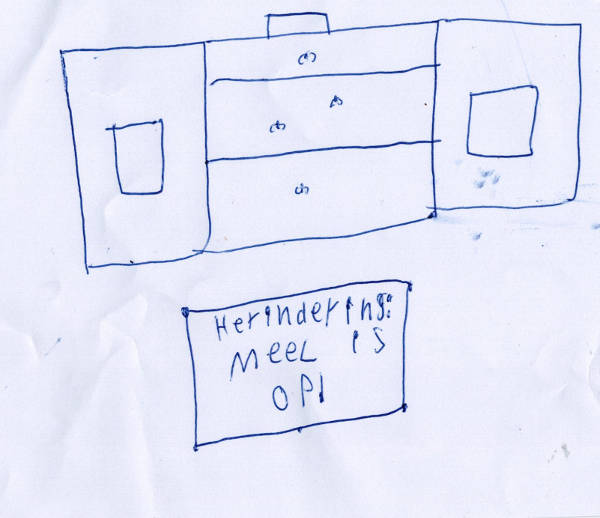

Welkom bij de website van beer en muis! Met de dingen van daag: Oma beer kwam er achter dat harco het zwijn de taart van oma beer heeft gestolen! (dat zie je naast deze text!) Met de links: het dagboek van oma beer/verhalen/ over beer en muis/opa beer vertelt/over iggy dat en nog veeeeel meer vind je op de website van beer en muis! veel plezier!
klein verhaal: panenkoeken
Op een dag wou beer panenkoeken bakken maar het meel was op! Oh nee! Toen gingen beer en muis naar haasje en aan haar vroegen ze: haasje heb jij nog meel thuis lichen? Toen zij haas ja hoor! en toen ging beer lekkere pannenkoeken bakken en ierdereen werd uitgenodigt einde!